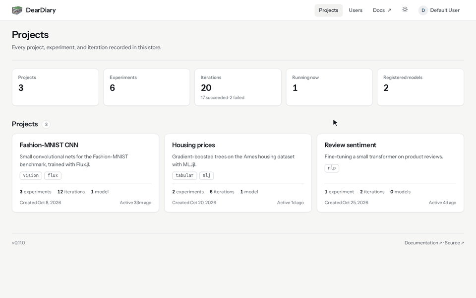
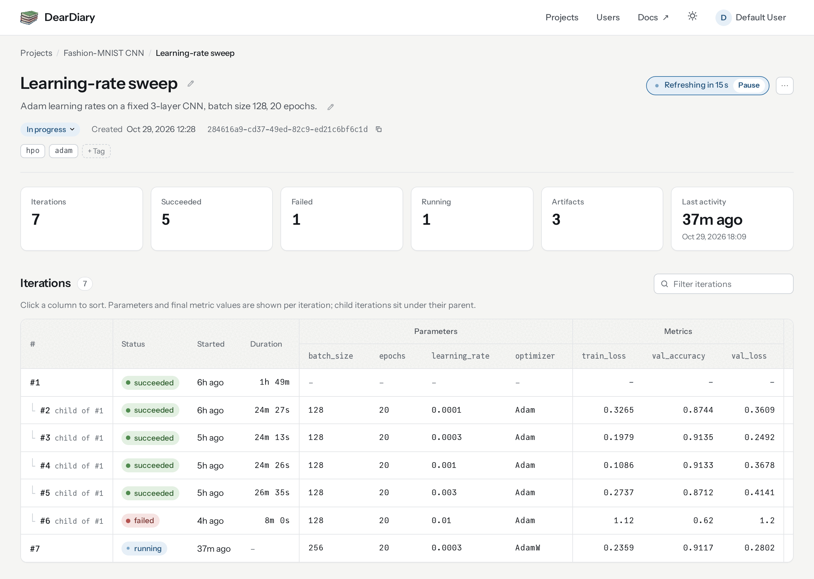

DearDiary.jl
A diary for your machine learning experiments, written in Julia.
StarDearDiary records what you train: the parameters you chose, the metrics you got, the files you saved, and the exact Julia environment each run used. By default everything lives in one DuckDB file, so you can start on a laptop with no server at all. When more people join, the same calls log to a shared server over HTTP, and everyone browses the results in the built-in web dashboard.

New here? Installation takes one line, and the Quickstart logs your first run in about a minute.
What you can do with it
Track projects, experiments, and iterations, each with parameters, metrics, notes, and tagged artifacts. Iterations can have children, which fits hyperparameter sweeps and distributed workers (see Parent and child iterations). When a run throws, it is marked failed and keeps the error text.
Log from anywhere. Call the tracking functions directly in your training process, or run the REST server and log over HTTP with the Julia client (DearDiary.connect, with_iteration, and friends). The client closes each iteration for you, whether the body returns or throws. Log from a remote client shows how.
Rebuild old runs. Every driver iteration records a Manifest.toml snapshot, the Julia version, and the git commit. DearDiary.restore(iteration_id) writes that environment to a fresh directory, ready for Pkg.instantiate. See Reproduce a past run.
Store artifacts where they fit. Bytes can sit inline in the database, on a local filesystem, or in any S3-compatible object store (AWS S3, MinIO, Cloudflare R2), and migrate_artifacts! moves them between backends on a live database.
Keep a model registry. Register checkpoints as versions, link them to the run that produced them, and promote them through staging and production. See Register and stage models.
Browse and tidy up in the dashboard. Compare runs in sortable tables and charts, edit names, descriptions, notes, statuses, stages, and tags in place, and manage users and project permissions when authentication is on. Embedded web UI has the details.

Why DearDiary?
Reproducible ML depends on knowing which code, data, and environment produced each result. Established trackers such as MLflow, Weights & Biases, and Aim are Python-first, and Python environment capture usually records dependency specifications that the installer resolves again at install time. DearDiary is written for Julia and saves the Manifest.toml of every run, so DearDiary.restore(iteration_id) can bring back the same dependency tree later. The tracking API is the same whether the store is a single DuckDB file on a laptop or a multi-worker deployment backed by S3.
Contributing
Bug reports, questions, and pull requests are welcome on the GitHub repository. Please follow the BlueStyle code style and add tests for new features.